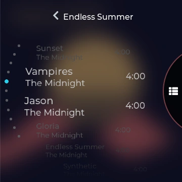
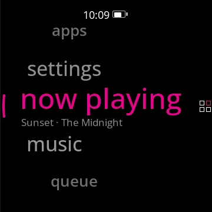
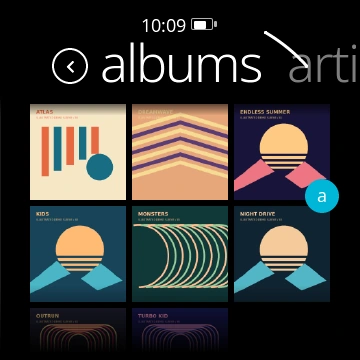
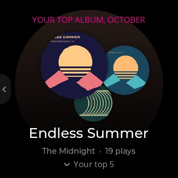

01 / SCROLLWheel mode


A little turn. A new favourite.
The focused row grows as the others curve away. Albums open with their cover, Play and Shuffle ready.
Tracks · Wheel scrolling
SNOWSKY DISC / DISCO! 3.3.0
Big type. Beautiful covers.
Your music, front and centre.

360 pixels. A whole new perspective.01 / 07 · Main menu
Big, flowing type puts Now Playing, your library and shortcuts within easy reach.
Swipe up on the player to return Home.
Captured from Disco! 3.3.0. Sample music, illustrated demo sleeves and listening history. Pick a screen and a colour; tap the Disc to enlarge.
COVER TO COVER
Turn through a favourite album. Browse by its cover. See what you keep coming back to.

The focused row grows as the others curve away. Albums open with their cover, Play and Shuffle ready.
Tracks · Wheel scrolling

A wall of covers, a flowing carousel or a clean list. Same collection. Three ways to find the next record.
Library · Album wall

Favourite artists, most-played albums and the songs on repeat. Your week, month and year in music.
Stats · Top albums
Real interface renders with sample data and illustrated artwork. Select a view, then tap the screen for a closer look.
Better Wheel lists. Reliable queue playback. A default cover for songs without artwork.
Release notesSAME DISC. DIFFERENT ENERGY.
Alongside Zune, three distinct personalities. Try their screens below.
Music
Cover to cover. Colour to colour.
A little record-store magic in your pocket.

Music
Pixel type. Electric colour. That old-player feeling.
Shout-out to the SanDisk Clip+.
Music
Big type. Easy touches.
Room to breathe.
Music
Warm panels, honest keys, one orange accent.
A radio dial for your music.
Tap a small screen to try the look. Tap the big one for a closer look.
Album accents, light and dark appearances, configurable shortcuts. Make the Disc feel like yours.
Make it yours ↗Download with Disc Shelf, explore a mood in SongSphere, or let Album Roulette choose.
Explore the apps ↗Contextual hints and a gesture guide, right on your player. Find them in Settings → Help.
Read the quick guide ↗See it move
The original 90-second tour. Earlier interface footage; the screenshots above show 3.3.0.
MADE TOGETHER
Zune’s visual direction, typography and original implementation come from namastecoconut-imagined. Adapted and polished for Disco by zmd22, with fixes from ericklv and the community.
Built on b0hemia’s diskOS, LVGL and the work of many contributors. Credits & licences ↗
Zune is an unofficial fan theme, unaffiliated with Microsoft.
READY WHEN YOU ARE
Made for the FiiO Snowsky Disc, starting from stock firmware V2.57.
Disco! 3.3.0 · Free and open source. Read the release notes ↗
Best-effort hobby project, experimental, as-is. No warranty or liability; not affiliated with FiiO or Snowsky. Back up your music and keep the saved stock image before you install.
Download the latest Windows app and choose Set up again once on its setup page. Older setups can otherwise keep installing their original version.
First install & Linux guidemacOS install guideAll downloadsSwitching & going backWhat’s new
Made for FiiO firmware V2.57. Start from FiiO’s stock V2.57 firmware: installing over upstream diskOS or another diskOS build is not supported and can be buggy. Switched from upstream diskOS and something looks wrong? Settings › System › Maintenance › Reset diskOS Settings. Starts stock after installing? Hold Volume Up at power-on, then Settings › System › Controls › Default UI › diskOS. Back up your player before you begin.